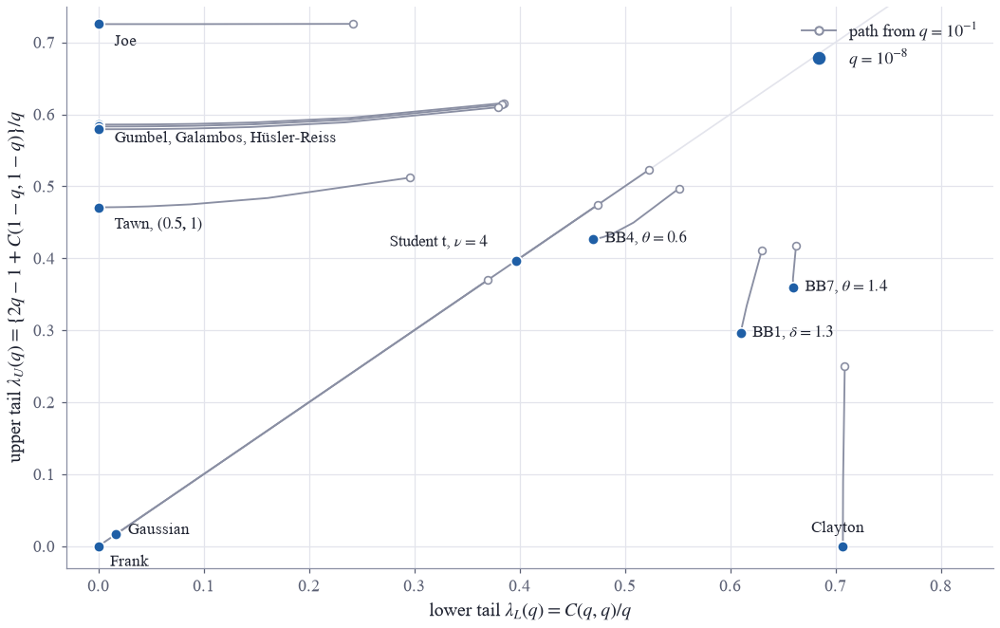
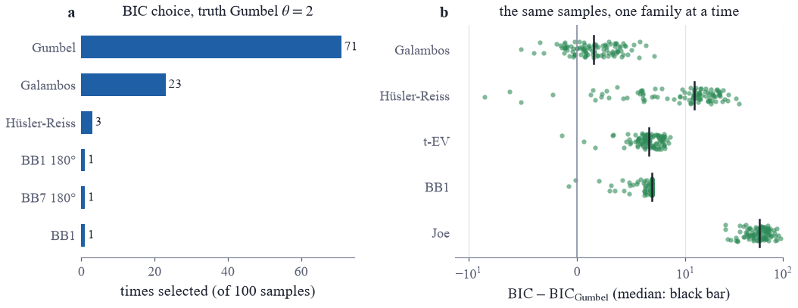

Copula families¶
fortvine offers 111 pair-copula families: 26 hand-coded families with codes 0 to 25, and
85 families produced by a single generic engine with codes from 10000 up. This section
describes them by construction. Every page gives the copula, its density and h-functions, the
parameter box fortvine uses, Kendall's tau, the tail dependence coefficients and the symmetry
properties; the complete catalogue lists every code with its name and box in one
table.
Notation¶
Throughout, \((u, v) \in (0, 1)^2\) and
- \(C(u, v)\) is the copula and \(c(u, v) = \partial^2 C / \partial u\, \partial v\) its density;
- \(h_1(v \mid u) = \partial C(u, v) / \partial u\) is the conditional distribution of \(V\) given
\(U = u\), and \(h_2(u \mid v) = \partial C(u, v) / \partial v\) that of \(U\) given \(V = v\)
(fortvine's
hfunc1andhfunc2); their inverses (hinv1,hinv2) drive simulation and the inverse Rosenblatt transform; - \(\tau\) is Kendall's tau, \(\tau = 4\,\mathrm{E}\,C(U, V) - 1\);
- \(\lambda_L = \lim_{t \to 0} C(t, t)/t\) and \(\lambda_U = \lim_{t \to 1} \big(1 - 2t + C(t, t)\big)/(1 - t)\) are the lower and upper tail dependence coefficients;
- a copula is exchangeable if \(C(u, v) = C(v, u)\);
- parameters are written in the order in which they are stored in
par(1:3).
Rotations. Most families describe positive dependence only. fortvine extends them by rotating the data counter-clockwise, as vinecopulib does: with \(c_0\) the unrotated density,
| rotation | density | effect |
|---|---|---|
| 0 | \(c_0(u, v)\) | as defined |
| 90 | \(c_0(v, 1 - u)\) | negative dependence |
| 180 | \(c_0(1 - u, 1 - v)\) | survival copula: lower and upper tails swap |
| 270 | \(c_0(1 - v, u)\) | negative dependence |
The families that already cover both signs, or are radially symmetric (independence, Gaussian, Student t, Frank, Plackett, FGM, AMH and the two nonparametric families), have no rotations. Details are in the manual.
Constructions¶
| Construction | General form | Hand-coded | Generic | Page |
|---|---|---|---|---|
| Independence | \(C(u, v) = uv\) | 1 | — | — |
| Elliptical | \(F_\rho\big(F^{-1}(u), F^{-1}(v)\big)\) | 2 | — | Elliptical |
| Archimedean | \(\psi\big(\varphi(u) + \varphi(v)\big)\), \(\psi\) a Laplace transform | 13 | 6 | Archimedean |
| Extreme-value | \(\exp\!\big(-(x + y)\, A\big(\tfrac{y}{x + y}\big)\big)\), \(x = -\log u\) | 5 (+ Gumbel) | 9 | Extreme-value |
| Archimax | \(\psi\big(\ell(\varphi(u), \varphi(v))\big)\) | 1 | 67 | Archimax |
| Khoudraji | \(u^{1-a} v^{1-b} C_0(u^a, v^b)\) | — | 3 | Khoudraji |
| Other parametric | Plackett, FGM | 2 | — | Other |
| Nonparametric | TLL, Bernstein | 2 | — | Nonparametric |
| Total | 26 | 85 |
Elliptical. The Gaussian and Student t copulas: the dependence of an elliptical distribution with its margins made uniform. Symmetric in every sense; the t copula has equal tail dependence in both corners.
Archimedean. A single decreasing convex function \(\psi\), the generator, with inverse \(\varphi\). fortvine draws every generator from seven Laplace-transform families (positive stable, gamma, Sibuya, logarithmic series, tilted positive stable, generalised Sibuya, negative binomial) and from compositions \(\psi_o(-\log\zeta(s))\) of two of them. The hand-coded members are Clayton, Gumbel, Frank, Joe, AMH and BB1, BB2, BB3, BB6, BB7, BB8, BB9, BB10; the generic engine adds six new compositions. Gumbel is counted here even though it is also extreme-value.
Extreme-value. Max-stable copulas, determined by a convex Pickands function \(A\) on \([0, 1]\). Positive dependence and upper-tail dependence only. Hand-coded: Tawn's asymmetric logistic, Galambos, Hüsler–Reiss, BB5 and the t-EV copula (plus Gumbel); the generic engine adds the symmetric and asymmetric mixed models, the one-weight Tawn types, Joe's asymmetric negative logistic and its types, and Khoudraji versions of Hüsler–Reiss and the mixed model.
Archimax. Capéraà, Fougères & Genest's (2000) combination of an Archimedean generator and a Pickands function, \(\ell(s, t) = (s + t) A(t/(s + t))\). It contains both previous classes and gives the only non-exchangeable families with dependence in both tails. BB4 is hand-coded; BB1, BB5 and BB6 are also Archimax copulas.
Khoudraji. An asymmetrisation that turns any copula into a non-exchangeable one with two extra exponents. Applied to Clayton, Joe and Frank it gives three new families; applied to extreme-value bases it gives the asymmetric EV models listed above.
Other parametric and nonparametric. Plackett and Farlie–Gumbel–Morgenstern belong to no construction above. TLL (transformation local likelihood) and the Bernstein copula estimate the copula density directly from the data.
Family codes¶
Hand-coded families: codes 0 to 25¶
| code | constant | family | construction | page |
|---|---|---|---|---|
| 0 | FV_INDEP |
independence | — | — |
| 1 | FV_GAUSSIAN |
Gaussian | elliptical | link |
| 2 | FV_STUDENT |
Student t | elliptical | link |
| 3 | FV_CLAYTON |
Clayton | Archimedean | link |
| 4 | FV_GUMBEL |
Gumbel | Archimedean and EV | link |
| 5 | FV_FRANK |
Frank | Archimedean | link |
| 6 | FV_JOE |
Joe | Archimedean | link |
| 7 | FV_BB1 |
BB1 (Clayton–Gumbel) | Archimedean, Archimax | link |
| 8 | FV_BB6 |
BB6 (Joe–Gumbel) | Archimedean, Archimax | link |
| 9 | FV_BB7 |
BB7 (Joe–Clayton) | Archimedean | link |
| 10 | FV_BB8 |
BB8 (Joe–Frank) | Archimedean | link |
| 11 | FV_TAWN |
Tawn (asymmetric logistic) | EV | link |
| 12 | FV_PLACKETT |
Plackett | other | link |
| 13 | FV_FGM |
Farlie–Gumbel–Morgenstern | other | link |
| 14 | FV_AMH |
Ali–Mikhail–Haq | Archimedean | link |
| 15 | FV_GALAMBOS |
Galambos | EV | link |
| 16 | FV_HUSLER_REISS |
Hüsler–Reiss | EV | link |
| 17 | FV_BB2 |
BB2 | Archimedean | link |
| 18 | FV_BB3 |
BB3 | Archimedean | link |
| 19 | FV_BB5 |
BB5 | EV, Archimax | link |
| 20 | FV_BB9 |
BB9 (Crowder) | Archimedean | link |
| 21 | FV_BB10 |
BB10 | Archimedean | link |
| 22 | FV_BB4 |
BB4 | Archimax | link |
| 23 | FV_TEV |
t extreme value | EV | link |
| 24 | FV_TLL |
TLL | nonparametric | link |
| 25 | FV_BERNSTEIN |
Bernstein | nonparametric | link |
Generic families: fam = 10000 k + 100 og + ie¶
A generic code is read as three digits groups. Take 10206 as an example: k = 1, og = 02,
ie = 06, an Archimax copula with the gamma generator and the type-1 asymmetric logistic
Pickands function, parameters \((\theta, \theta_\ell, \psi_1)\).
| field | values | meaning |
|---|---|---|
k |
1 | the copula as built from og and ie |
| 2 | its Khoudraji asymmetrisation, two more parameters \((a, b)\) | |
og |
0 | no generator, \(\psi(s) = e^{-s}\): the copula is extreme-value |
| 1–4 | positive stable, gamma, Sibuya, log series (one parameter) | |
| 5–7 | tilted positive stable, generalised Sibuya, negative binomial (two parameters) | |
| 11–26 | composition po.pin: outer po and inner pin from 1–4, og = 10 + 4(po - 1) + pin (two parameters) |
|
ie |
0 | independence inner, \(\ell(s, t) = s + t\): the copula is Archimedean |
| 1–4 | logistic, negative logistic, Hüsler–Reiss, symmetric mixed (one parameter) | |
| 6, 7, 9, 10, 11 | asymmetric logistic types 1/2, asymmetric negative logistic types 1/2, asymmetric mixed (two parameters) | |
| 5, 8, 12, 13 | asymmetric logistic, asymmetric negative logistic, Khoudraji–HR, Khoudraji–mixed (three parameters) |
Parameters are stored in the order generator, Pickands function, Khoudraji exponents, with at
most three in total. The generic engine accepts a code only if it is well defined and
identifiable (gen_valid):
- at most three parameters;
- not the independence copula (
og = 0,ie = 0) and not Gumbel written as positive stable plus logistic (10101); - not a composition that collapses to one transform (PS.PS, Sibuya.Sibuya) or that is not accurate in double precision (a log-series inner under a positive stable, Sibuya or log-series outer);
- no Pickands function together with a gamma-inner composition (BB2, BB3, BB7 and logseries.gamma type generators);
- no Khoudraji wrapper around an already asymmetric Pickands function (
ie≥ 5).
Of the valid codes, those that duplicate a hand-coded family or another generic code
(gen_dup: for example 10200 = Clayton, 10202 = BB4, 20100 = Tawn) stay usable for
cross-checks but are left out of fv_generic_families(). The 85 codes it returns are 6
Archimedean, 9 extreme-value, 67 Archimax and 3 Khoudraji families.
Tail dependence at a glance¶
Unrotated families; the 180° rotation swaps \(\lambda_L\) and \(\lambda_U\), and the 90°/270° rotations move the tail dependence to the off-diagonal corners.
| code | family | \(\lambda_L\) | \(\lambda_U\) |
|---|---|---|---|
| 1 | Gaussian | 0 | 0 |
| 2 | Student t | \(2T_{\nu+1}\!\left(-\sqrt{(\nu+1)\frac{1-\rho}{1+\rho}}\right)\) | same as \(\lambda_L\) |
| 3 | Clayton | \(2^{-1/\theta}\) | 0 |
| 4 | Gumbel | 0 | \(2 - 2^{1/\theta}\) |
| 5 | Frank | 0 | 0 |
| 6 | Joe | 0 | \(2 - 2^{1/\theta}\) |
| 7 | BB1 | \(2^{-1/(\theta\delta)}\) | \(2 - 2^{1/\delta}\) |
| 8 | BB6 | 0 | \(2 - 2^{1/(\theta\delta)}\) |
| 9 | BB7 | \(2^{-1/\delta}\) | \(2 - 2^{1/\theta}\) |
| 10 | BB8 | 0 | 0 for \(\delta < 1\) (\(2 - 2^{1/\theta}\) at \(\delta = 1\)) |
| 11 | Tawn | 0 | \(\psi_1 + \psi_2 - (\psi_1^\theta + \psi_2^\theta)^{1/\theta}\) |
| 12 | Plackett | 0 | 0 |
| 13 | FGM | 0 | 0 |
| 14 | AMH | 0 | 0 |
| 15 | Galambos | 0 | \(2^{-1/\theta}\) |
| 16 | Hüsler–Reiss | 0 | \(2\big(1 - \Phi(1/\lambda)\big)\) |
| 17 | BB2 | 1 | 0 |
| 18 | BB3 | 1 (\(\theta > 1\)), \(2^{-1/\delta}\) (\(\theta = 1\)) | \(2 - 2^{1/\theta}\) |
| 19 | BB5 | 0 | \(2 - (2 - 2^{-1/\delta})^{1/\theta}\) |
| 20 | BB9 | 0 | 0 |
| 21 | BB10 | 0 | 0 |
| 22 | BB4 | \((2 - 2^{-1/\delta})^{-1/\theta}\) | \(2^{-1/\delta}\) |
| 23 | t-EV | 0 | \(2T_{\nu+1}\!\left(-\sqrt{(\nu+1)\frac{1-\rho}{1+\rho}}\right)\) |
For the generic families the rules are short:
| generic class | \(\lambda_L\) | \(\lambda_U\) |
|---|---|---|
extreme-value (og = 0) |
0 | \(2(1 - A(1/2))\) |
| Archimedean compositions | from a gamma part only | from a positive stable or Sibuya part |
| Archimax | \((2A(1/2))^{-1/k}\) with a gamma outer part, else 0 | \(2 - (2A(1/2))^{1/m}\), positive unless \(A \equiv 1\) |
| Khoudraji | 0 unless \(a = b = 1\) | \(a + b - \ell_0(a, b)\) |
The exponents \(k\) and \(m\) and the per-family formulas are on the Archimedean and Archimax pages. The lower tail and upper tail columns of the catalogue record which tails a family can have somewhere in its parameter box; they are what fortvine's preselection uses.

Choosing a family set¶
The family set is the list of candidates that select compares for each pair (or vine edge),
held in ctl%family_set(1:ctl%nfam). Some guidelines:
- Default.
fv_controlsstarts with the 23 parametric families0–22. Settingctl%nfam = 24adds the t-EV copula, which is slow to fit, andctl%nfam = FV_NCLASSIC(26) adds the two nonparametric families as well. - vinecopulib parity.
FV_PARAMETRIC(codes 0–11) is the set used by vinecopulib and pyvinecopulib, convenient for comparisons. - Fast first pass.
FV_ONE_PAR(Gaussian, Clayton, Gumbel, Frank, Joe) plus independence. Withctl%method = FV_ITAU(tau inversion instead of maximum likelihood) only codes 0–6 are considered. -
Adding generic families. Append
fv_generic_families()(85 codes) or a hand-picked subset;family_setholds up to 192 codes. -
What the extra families buy. Asymmetry (Tawn and its types, the asymmetric EV models, Khoudraji and the asymmetric Archimax codes) and both-tail dependence with separate control of each tail (BB1, BB4, BB7, gamma.Sibuya
11700, gamma-generator Archimax). Families that differ only in fine detail add run time but rarely change a selection: at equal Kendall's tau, Gumbel, Galambos, Hüsler–Reiss and t-EV are nearly indistinguishable. - Penalties and sample size. With BIC, every extra parameter must earn its keep, so three-parameter families win only on large samples with clear asymmetry. On small samples a short list of one- and two-parameter families is both faster and more stable.
- Preselection (
ctl%preselect, on by default) drops rotations and families whose tail pattern contradicts the data, using the correlation of the normal scores in the two opposite quadrants, so a large family set costs less than its length suggests.

See fitting and selection for the selection criteria and the generic engine for how the 85 codes are evaluated.